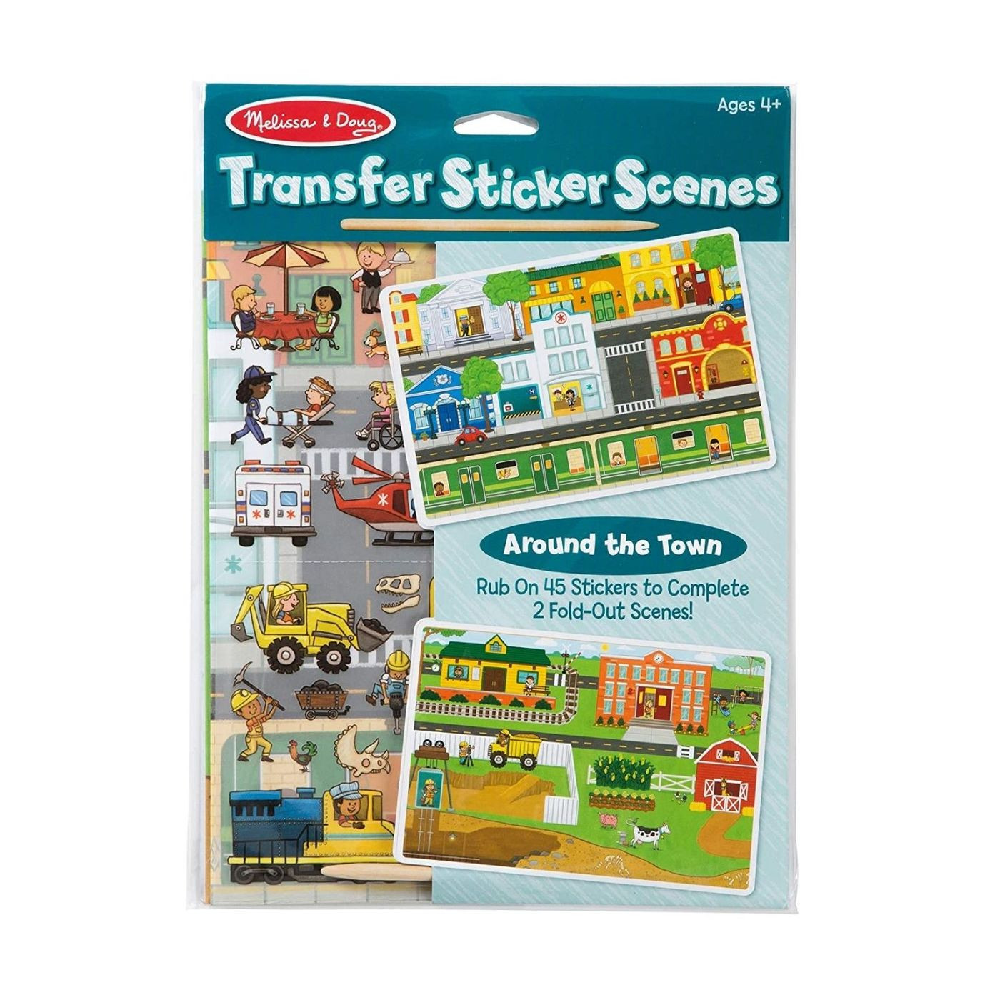
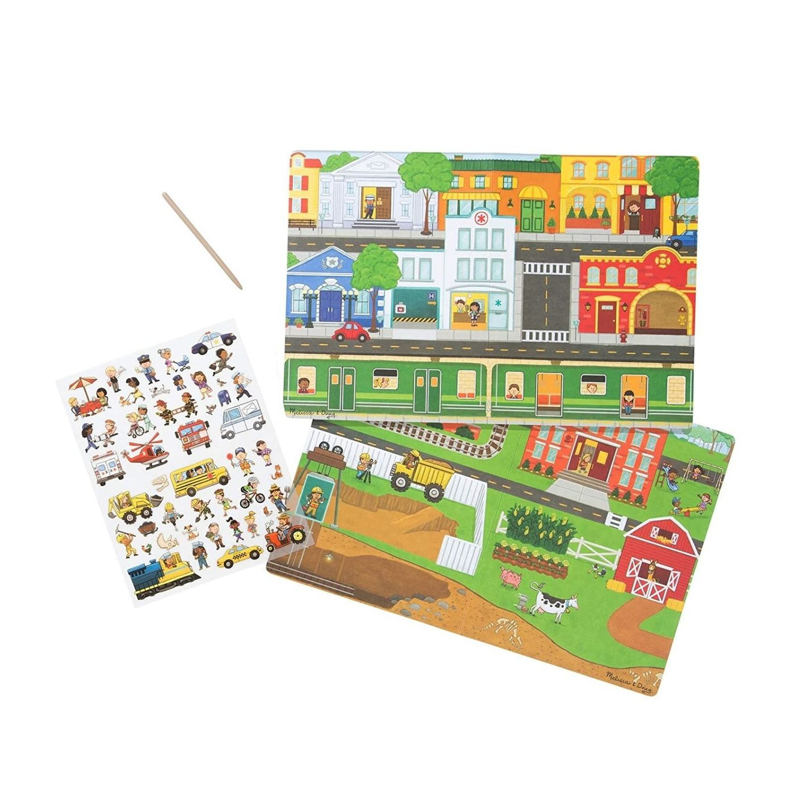

Transfer Sticker Set - Around the Town
Sticker Pads
R100Bring the town to life by rubbing dozens of stickers onto two illustrated scenes! Position the stickers, use the included stylus to rub, then peel back to reveal art that blends right in with the scenes! Tell the stories about whatâs happening around the town and display when complete. Transfer stickers are an engaging way for kids four and older to develop fine motor skills, to learn about cause and effect, and to hone narrative thinking skills. Set of rub-on transfer stickers with community scenes to decorate Includes 45 transfer stickers, wooden stylus, two glossy scenes Position stickers, rub with stylus and reveal picture Art blends in with the scenes Ages 4+
Enquire about this product
Transfer Sticker Set - Around the Town at Kids Corner KZN
Transfer Sticker Set - Around the Town is part of our Sticker Pads collection. Kids Corner KZN stocks toys for learning, pretend play, creative play, gifting and everyday childhood discovery in South Africa.
Browse more Sticker Pads toys